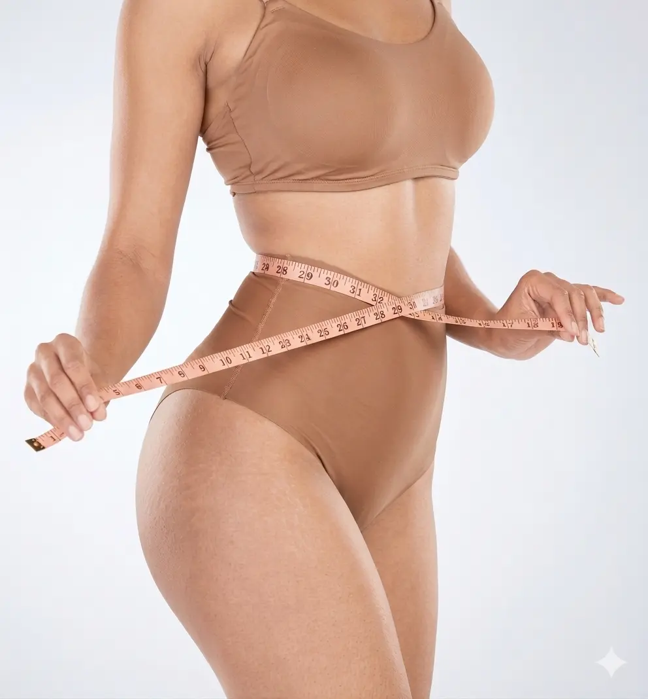
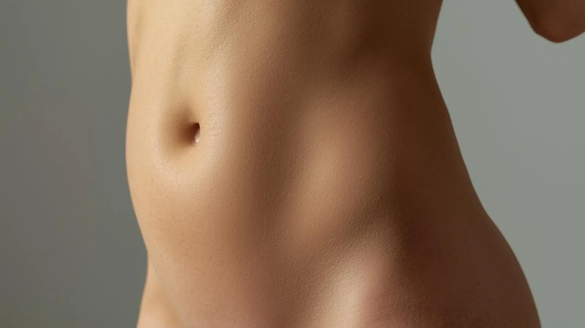
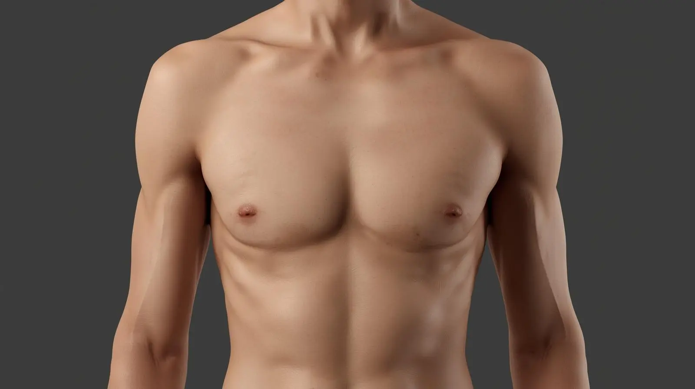

BOARD-CERTIFIED PLASTIC SURGERY
Precision body contouring tailored to your unique anatomy. Achieve natural-looking, lasting results with advanced liposuction techniques.
Book a ConsultationLiposuction is a surgical procedure that removes localized fat deposits to sculpt and contour the body.
It is not a weight loss procedure, but rather a body contouring technique designed to improve shape and proportion.

Liposuction removes fat but does not address loose skin or muscle separation. A tummy tuck is more suitable when there is excess skin or weakened abdominal muscles.
Abdomen

Flanks & Love Handles
Thighs
Arms
Chin & Neck

Chest
Removes stubborn fat from specific areas.
Creates smoother and more defined contours.
Results can be maintained with a healthy lifestyle.
Assessment of your goals and suitable treatment areas.
Targeted fat removal using precise surgical techniques.
Gradual improvement in contour over weeks as swelling subsides.